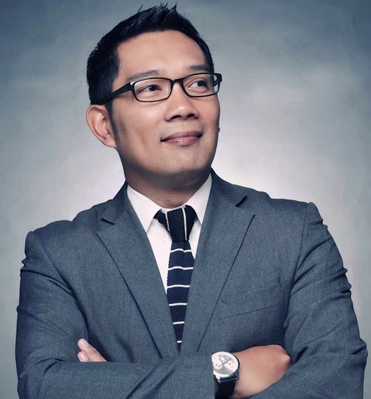

Target Audience
The target audience of the BataviaCommerce.com website is described below:
- Who: Business owners of all sorts, professionals, and others who are interested in knowing how to protect their interests by joining a collective group of like-minded business owners.
- Age: 17-90 years old
- Technology: Laptops, Macbook, iPad, Tablet, Smart phone
- Income: Income levels will typically be between $20,000 and above annually.
- Motivation: Enhance knowledge of the town and its chains of businesses. Join the organization of business owners in the chamber of commerce.
Personas
Erick Thohir
- Occupation: Chief Executive Officer (CEO)
- Demographics & Education: 51 years old. The owner of a retail business in the city in multiple locations. He is the founder and chairman of Mahaka Group.
- Goals and motivation for using the site: Learn what chamber of commerce is about and who it is for.
- Social: He was former owner and chairman of Inter Milan and D.C. United, President Director of Local TV and President of the Indonesian Olympic Committee.
- Technology: Uses mostly his Macbook. For phone device, he uses her Samsung Galaxy S21 Ultra for a high screen resolution.
- Quote: "Building it must be sustainable. Not like a firefighter.' We have to build until there is nothing left to build."
Ridwan Kamil
- Occupation: Chief Executive Officer (CEO)
- Demographics & Education: 50 years old. He is an Indonesian architect and politician who is the 15th Governor of West Java, the most populous province of Indonesia.
- Goals and motivation for using the site: Join the Batavia Commerce organization and be part of the community.
- Social: As an architect with a love for green, he uses creative design such as maximizing pedestrian walkways to solve urban issues. He is famously known as the designer of Aceh's tsunami museum and Rasuna Epicentrum (Jakarta).
- Technology: Uses mostly his iPad Air and Macbook for work. For his phone device, he has an iPhone 13 pro max. He is more of an apple user.
- Quote: "Thinkers are great - but doers change the world."
Scenarios
- How do I connect with other business owners?
- What is Chamber of Commerce and what is it for?
- Benefits of joining a Chamber of Commerce
- How do I influence the government in my city as a business owner?
- Are there any business opportunity events in my city?